製品情報Product information
製造工程 Manufacturing process
POINT 1
徹底した品質管理
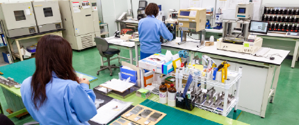高精度検査機器を用いた万全の管理体制で、お客様に安心していただける品質の原紙を提供することに努めています。
POINT2
環境負荷低減の設備
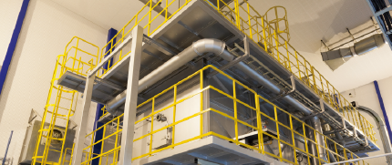廃棄される資材を燃料にして工場内のエネルギーを生成するバイオマスボイラーの運用など、環境負荷低減に取り組んでいます。
POINT 3
環境配慮型製品
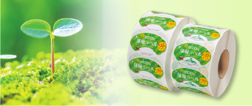バイオマス製品、FSCⓇ森林認証製品、リサイクル材料製品、薄層シール等の持続可能な製品の開発・製造を行っています。
取扱い原紙一覧 List of base papers handled
下記は一例です。糊・セパ紙との組み合わせなど、
お客様のご要望にお応えいたします。
上質タック紙
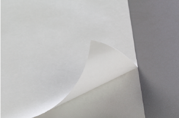化学パルプだけで製造した表面がマット調の製品です。キャストコートやアートタックより安価な為、表示用ラベル等で使用されることが多いです。
アートタック紙
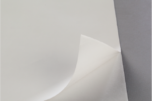上質紙に無機顔料をコーティングし、スーパーカレンダーで仕上げて製造したものです。特徴として、平滑度や白色性に優れ、カラー印刷の発色に適しています。
コートタック紙
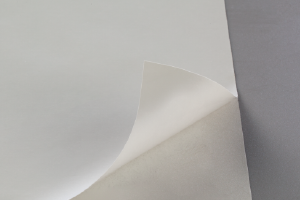アート紙と同様、上質紙に無機顔料をコーティングし、スーパーカレンダーで仕上げて製造したものです。但しアート紙に比べコーティング量が少なめです。特徴として、カラー印刷の発色に適しています。
キャストコートタック紙
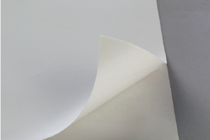コート紙やアート紙よりコーティング層が厚く、鏡面仕上げされた金属面に押しあてて製造したものです。特徴として、強い光沢感や高級感があり、カラー印刷や美術印刷に適しています。
合成紙
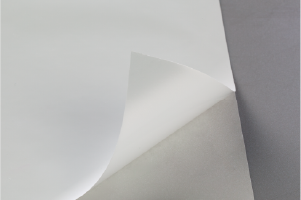プラスチックを主原料に添加剤などを混ぜて造られたものです。白色性がよく滑らか、防湿性・耐水性に優れており水に濡れても破れにくく強度があり、ポスター等にもよく使用されます。バイオマスマーク認証品もあります。
ホイルタック紙
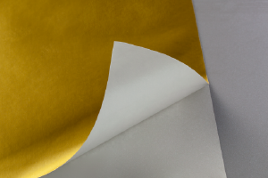紙にアルミ箔をラミネートして製造したものです。金ホイルタック紙、銀ホイルタック紙等があります。
和紙タック
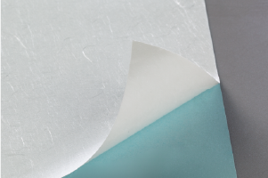日本古来の紙の質感を持ち、落ち着いた雰囲気と和の高級感が特徴です。デザインイメージの一部として、その質感が使用されることが多く、特に酒類には非常に多く使用されています。
クラフトタック紙
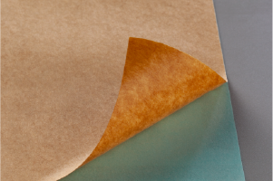段ボールの表面のような紙質をもつ紙で色の浅い半晒しクラフトと、色の濃い未晒しクラフトがあります。デザインイメージの一部として、その質感が使用されることが多いです。
訂正貼りタック紙
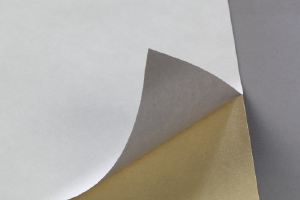訂正貼り用として、裏面にグレーベタを引き下地が見えないように加工したものです。上質・アート・キャストコートタック等があります。
コピータック用紙
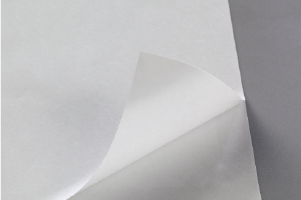コピー機やレーザープリンタの印字に対応したタック用紙です。
再生タック紙
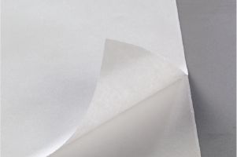古紙を配合したラベル原紙です。自治体のゴミ処理券等に使用されることが多いです。
含浸紙タック
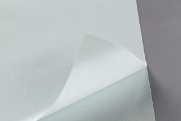上質系の紙に高分子樹脂を含浸したものです。強度及び耐水性に優れています。
無塵紙タック
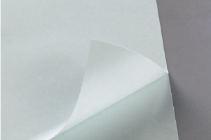クリーンルーム内の使用にあわせて開発された、こすれなどによる発塵を抑えた紙です。
PETタック
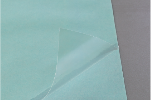ポリエステルフィルムにタック加工した製品。熱に強く、透明性に優れています。透明・白以外にも、金・銀等があります。バイオマスマーク認証品もあります。
塩ビタック
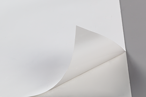柔らかく、印刷適正・耐候性に優れ、屋外での 製品に使用される場合が多く、特にステッカー 等に多く利用されています。但し、有機塩素化合 物のため、環境問題に配慮しその使用は減少傾向 にあります。
塩ビタック
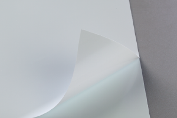柔らかく、印刷適正・耐候性に優れ、屋外での製品に使用される場合が多く、特にステッカー等に多く利用されています。但し、有機塩素化合物のため、環境問題に配慮しその使用は減少傾向にあります。
PPタック
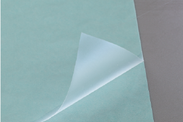ポリプロピレンタック加工した製品です。透明性がよく耐水性があります。同質のプラスチック容器に貼ったままでリサイクル処理が可能です。バイオマスマーク認証品もあります。
PSタック
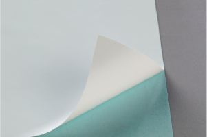ポリスチレンタック加工した製品です。耐水性があり、同質のプラスチック容器に貼ったままでリサイクル処理が可能です。
一般サーマル
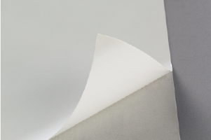一般的にスーパーや、コンビニ等で広く使用されている汎用サーマル紙です。電子レンジ対応の耐熱用サーマルもあります。
スターサーマル®
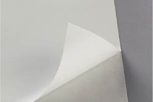サーマルの表面にツヤ加工を施し光沢を出したものです。電子レンジ対応の耐熱用サーマルもあります。結露に強い冷凍用サーマル紙もあります。
捺印サーマル
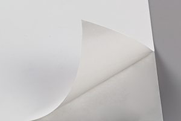捺印適正があり、工程管理ラベル等で使用されます。印刷適正にも優れています。
二色発色サーマル
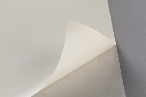一定の温度で、印字色が変化するサーマル紙です。流通用等に使用されます。
物流用サーマル
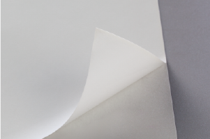発色性を優先したサーマル紙です。蛍光染料を使用する場合が多い為食品には不可。
ハンディターミナル用
サーマル
検針用通知書等に使用されるサーマル紙です。印字部分が消えにくく、長期保存に適しています。
長期保存用サーマル
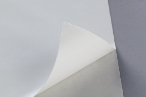発色部の退色がない長期保存用のサーマル紙です。
合成紙サーマル
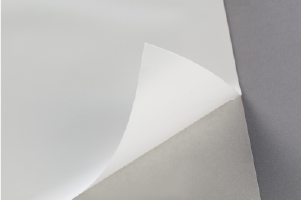合成紙を使用した耐水性に優れたサーマル紙です。
再生合成紙サーマル
(エコスリム®シリーズ)
再生ポリエステルフィルム（白色）を使った環境配慮型のサーマル紙です。
クリアサーマル®
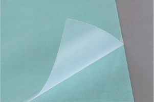透明性に優れたサーマル紙です。電子レンジ対応の耐熱品や高保存性タイプもあります。
スターサーマル®、クリアサーマル®、エコスリム®はOSPの登録商標です。